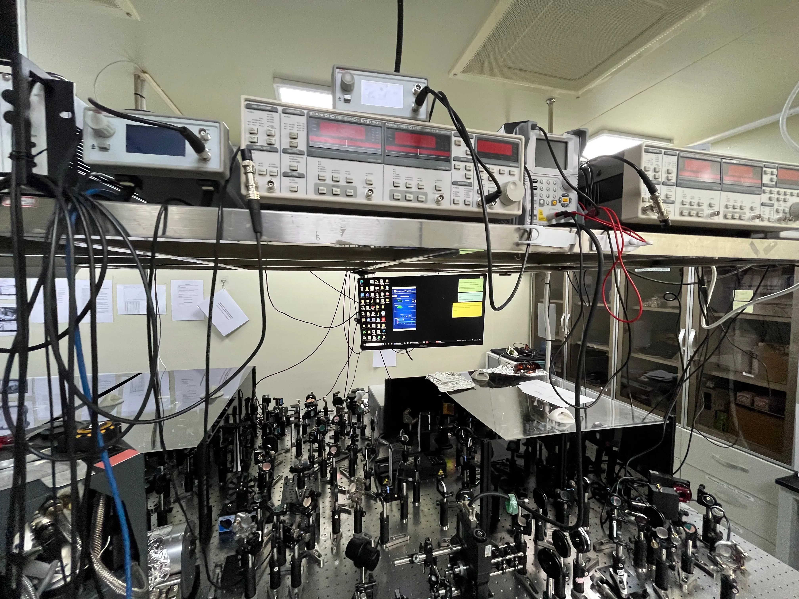
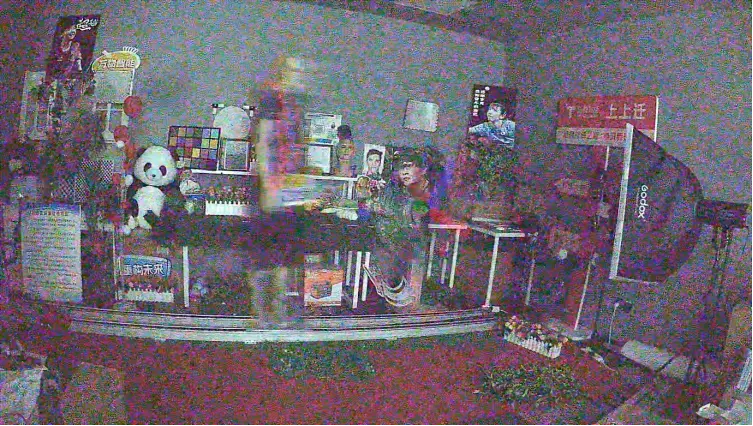
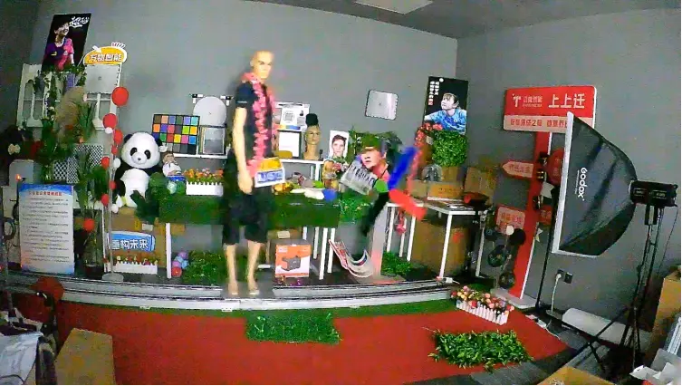

About Me
Hi!
我是楚千羽 (Qianyu Chu)，毕业于中国天津的 天津大学（Tianjin University）精密仪器与光电子工程学院的Photonic Systems Laboratory (PSL)。我的导师是李桂芳教授 (美国国家发明家科学院院士, CREOL终身讲席教授, 中国 "973计划" 首席科学家) 和张林教授 (中组部 "万人计划" 科技创新领军人才, 天津市光电芯片与多维光纤集成系统工程研究中心主任)。
我的研究兴趣包括多模态大语言模型(MLLMs)、计算成像、图像信号处理(ISP)、AI-ISP、高性能计算、光计算、AI for Science和强化学习等领域；目前已发表论文10余篇。
除了科研和学习之外，我对口琴有着浓厚的兴趣，一直以来，我坚持不懈的练习、演奏口琴；我曾作为选手参加泮湖口琴音乐节，那段时光给我留下了深刻且美好的回忆。
如需了解更多信息，欢迎通过我的电子邮件与我联系:)
研究方向
人工智能： 多模态大语言模型(MLLMs)、AI-ISP、强化学习
高性能计算： AI4S、并行计算、计算成像、光计算、衍射深度神经网络
硅光通信系统：AI for Photonics、数字信号处理 (DSP)、光通信器件及子系统
News
| Jun 2023: | 不再更新News. |
| Jun 2023: | 我硕士研究生毕业了！ |
| Mar 2023: | 和廉兴旺一起去看望陈雅颂老师: picture |
| Jul 2022: | 我将以硕士研究生的身份加入中国移动云能力中心进行实习，从事算法工程师的工作，期间与马干林博士合作研究！ |
| Jul 2022: | 参加并完成OV200 for CV Applications Intermediate Level,并获得获得Datawhale和英特尔®联合颁发的OpenVINO™中级认证证书！ |
| Jun 2022: | 参加并完成英特尔® OpenVINO™工具套件初级课程,并获得“Introduction to Intel® Distribution of openVINO™ toolkit for Computer Vision Applications”证书！ |
| Jun 2022: | 参加并完成吴恩达老师的Machine Learning (New Version)课程,并获得合格证书！ |
| May 2022: | 参加并完成吴恩达老师的Deep Learning课程,并获得合格证书！ |
| Mar 2022: | 在MOOC上参加并完成温州大学黄海广老师的机器学习课程,并获得合格证书！ |
| Mar 2022: | 第二次参加并完成吴恩达老师的Machine Learning (Old Version)课程,并获得合格证书！ |
| Jan 2022: | 在MOOC上参加并完成北京理工大学嵩天老师的Python语言程序设计课程,并获得合格证书！ |
| Oct 2021: | 荣获天津大学蒋震奖学金，全院共15人! |
| Oct 2021: | 荣获天津大学研究生学业一等奖学金！ |
| Oct 2021: | 荣获天津大学三好学生！ |
| Aug 2021: | 参加第五届CVIT IIIT暑期学校的TensorFlow实践培训！ |
| Nov 2020: | 参加第十七届“华为杯”中国研究生数学建模竞赛，获得国家级二等奖！ |
| Oct 2020: | 荣获天津大学蒋震奖学金，全院共15人! |
| Seq 2020: | 将前往天津大学，精密仪器与光电子工程学院，电子信息专业，攻读硕士学位！ |
| Jul 2020: | 在无锡市弘学笃行教育培训中心兼职，职位是高中物理教师！ |
| Jun 2020: | 毕业于天津工业大学，获得光电信息科学与工程专业 理学学士学位！ |
| Jun 2020: | 毕业论文被评为天津工业大学优秀毕业论文！(指导老师为刘晓东教授和张林教授) |
| Jun 2020: | 被评为天津工业大学优秀毕业生！ |
| Nov 2019: | 荣获天津市人民政府奖学金！ |
| Jun 2019: | 担任天津工业大学光信学生党支部支部书记，任期一年！ |
| Nov 2018: | 荣获国家奖学金！ |
| Oct 2018: | 作为口琴选手选手参加第七届泮湖口琴音乐节，并获得亚军！(演奏天津工业大学口琴社的社歌：明天我们一起走) |
| Oct 2018: | 荣获天津市优秀学生！ |
| May 2018: | 在北京杏林睿光科技有限公司实习，主要负责使用算法优化工艺！ |
| Jan 2018: | 进行为期六个月的中国大学生物理学术竞赛的赛前物理实验准备，期间得到了顾宏老师、张耀芳老师、卢会平老师的鼎力支持！ |
| Nov 2017: | 在天津市河西区环湖东里社区做志愿者：教老人正确使用手机和电脑! |
| Nov 2017: | 荣获全国大学生数学建模竞赛 国家级二等奖！ |
| Oct 2017: | 作为口琴选手选手参加第六届泮湖口琴音乐节！ |
| Jul 2017: | 参加为期两个月的数学建模“魔鬼训练”，期间得到了汪晓银老师、陈雅颂老师的鼎力支持，得到了胡坤学长、队友廉兴旺、成方圆的极大帮助！ |
教育经历
-- GPA：89.88/100，专业排名：1/30
-- 主研方向：计算机视觉、深度学习中基于样本难度的加权策略、信道均衡光计算

--GPA：93+，专业排名：1/108
--担任天津工业大学物理科学与技术学院光信学生党支部 支部书记；天津工业大学优秀共产党员
工作经历
-- 图像信号处理 (ISP), including AI-ISP, AIBNR, AI-LTM, 3DNR, YNR, DRC, Gamma Correction, HDR Imaging.
-- AI-Tuning.
-- AI for Science.
-- 相机科学.
-- 所研发的AI ISP芯片获选2024中国国际社会公共安全产品博览会“优秀创新产品”奖
-- 所研发的可重构、多阶段AI ISP技术获选2024清微智能团队“星火”奖
-- 机器学习和深度学习算法调优
-- 熟悉Linux操作系统，输出操作基本命令使用文档
-- 使用LightGBM算法做客户服务数据监督学习与预测任务
-- 熟悉OpenStack各组件，独立搭建一套Stand-Alone OpenStack双节点私有云环境
所获奖项
2020/12 | 第十七届“华为杯”中国研究生数学建模竞赛 国家级二等奖
2019/09 | 第十五届挑战杯天津市大学生课外学术科技作品竞赛 天津市三等奖
2019/04 | 美国大学生数学建模竞赛 国际级一等奖 (M奖)
2018/11 | 全国大学生数学竞赛 (天津赛区) 天津市二等奖
2018/06 | 天津市大学生物理竞赛 天津市特等奖
2018/06 | 全国大学生机器人大赛 (robocon) 国家级三等奖
2018/05 | 中国大学生物理学术竞赛 (CUPT，华北赛区) 华北赛区三等奖
2017/12 | 全国大学生统计建模竞赛 国家级优秀奖
2017/11 | 全国大学生数学建模竞赛 国家级二等奖
2017/07 | 天津市大学生数学竞赛 (理工类) 天津市二等奖
所获荣誉
2021/12 | 蒋震奖学金 (6/470)
2021/09 | 天津大学研究生学业一等奖学金
2021/09 | 天津大学三好学生
2020/10 | 蒋震奖学金 (6/470)
2020/09 | 天津大学研究生学业一等奖学金
2019/11 | 天津市人民政府奖学金 (2/360)
2018/12 | 天津市大学生创新奖学金 (全校22000多名学生 (本、硕、博)，仅有5人)
2018/11 | 国家奖学金 (1/360)
2018/11 | 天津市王克昌奖学金 (2/360)
2018/11 | 天津市优秀学生 (1/180)
2017/11 | 国家励志奖学金
论文著作
All-Optical Nonlinear Diffractive Deep Network for Ultrafast Image Denoising
Xiaoling Zhou#, , Wei Ye*, Rui Xie, Wenbo Zhang, Guanju Peng, Zongze Li*, and Shikun Zhang*
Conference on Computer Vision and Pattern Recognition (CVPR 2025, CCF-A)
2025 TKDE
Xiaoling Zhou, Wei Ye*, , Lei Zou, and Shikun Zhang*
IEEE Transactions on Knowledge and Data Engineering (2025 TKDE (JCR: Q1, IF: 8.9), CCF-A)
HaDeMiF: Hallucination Detection and Mitigation in Large Language Models
Xiaoling Zhou, Mingjie Zhang, , Wei Ye*, Shikun Zhang*
International Conference on Learning Representations (ICLR 2025, 机器学习领域三大顶会之一)
Boosting Model Resilience via Implicit Adversarial Data Augmentation
Xiaoling Zhou, Wei Ye*, , Rui Xie, Shikun Zhang*
International Joint Conference on Artificial Intelligence (IJCAI 2024, CCF-A)
Enhancing In-Context Learning via Implicit Demonstration Augmentation
Xiaoling Zhou, Wei Ye*, Yidong Wang, Chaoya Jiang, , Rui Xie, Shikun Zhang*
Annual Meeting of the Association for Computational Linguistics (ACL 2024, CCF-A)
Advanced Kalman-PPO Algorithm for High-Speed Optical Computing
, Guanju Peng, Yang Wang, Lin Zhang*, Guifang Li*
European Conference on Computer Systems 2024 (EuroSys 2024, CCF-A)
AN-D2NN: Classification of Modes with Amplitude Nonlinear Diffractive Deep Neural Network
Kunpeng Zhu#, , Wenbo Zhang#, Guanju Peng*, Yi Cheng, Jin Liu, Zongze Li*
International Conference on Optical Communications and Networks (ICOCN 2024, 国际顶级光通信会议)
Denoising in Mode Conversion by Utilizing Diffractive Deep Neural Networks Optimized with Reinforcement Learning
, Wenbo Zhang#, Yang Wang, Guanju Peng*, Zongze Li*, Xiaoyan Zhou, Lin Zhang*
Optical Fiber Communication Conference (OFC 2024, 国际顶级光通信会议)
Nonlinear Distortion Mitigation via Coherent All-Optical Reservoir Computing for Long-Haul IM-DD transmission System
Guanju Peng, Yaping Liu*, , Kunpeng Zhu, Zhiqun Yang, Jianping Liu, Shigui Zhang, Zhanhua Huang, Lin Zhang*
Asia Communications and Photonics Conference (ACP 2023)
Coherent All-Optical Reservoir Computing for Nonlinear Equalization in Long-Haul Optical Fiber Communication Systems
Guanju Peng, Yaping Liu, , Kunpeng Zhu, Zhiqun Yang, Jianping Li, Shigui Zhang, Zhanhua Huang, Lin Zhang*
Optics & Laser Technology (2023, OLT)
Optical Trapping Based on Microring Resonators with Transverse Slot Structure
, Yi Cheng, Jin Liu, Guanju Peng*
Applied Optics (2023, AO) | JCR: Q3
Packet Header Recognition Utilizing an All-Optical Reservoir Based on Reinforcement-Learning-Optimized Double-Ring Resonators
, Xiaoyan Zhou*, Zongze Li, Guanju Peng, Yuhao Guo, Lin Zhang*
Journal of Selected Topics in Quantum Electronics (2023, JSTQE) | JCR: Q1
Header Recognition Utilizing an All-Optical Reservoir with Delay- Bandwidth-Product-Maximized Double-Ring Resonators
, Zongze Li, Xiaoyan Zhou, Guanju Peng, Yuhao Guo, Wenwei Xu*, Lin Zhang*
Conference on Lasers and Electro-Optics (CLEO 2023, 国际顶级光电子会议)
Effect of particle size, transparency and light intensity on the color of powder
, Weirong Gan, Xinhai He, Huiping Lu, Yaofang Zhang*
2020 International Conference on Green Chemical and Environmental Science (ICGCES 2020)
专利
[发明专利]：一种微环谐振腔时延带宽积最大化方法及系统
张林, , 李宗泽, 周笑艳
P. R. China Patent: CN 115952717 A （鹏程实验室 合作专利）
[发明专利]：一种光包头识别系统、集成芯片以及识别方法
张林, , 李宗泽, 周笑艳
P. R. China Patent: CN 115865191 A （鹏程实验室 合作专利）
[发明专利]：一种光计算芯片及光计算方法
张林, , 周笑艳, 朱清
P. R. China Patent: CN 118233016 A （华为技术有限公司 合作专利；华为伽利略实验室）
[实用新型专利]：一种用于实验室的计算机通信设备
, 周晓玲, 过昱企, 张卓力, 甘伟荣
P. R. China Patent: CN 210137522 U （国家级大学生创新创业项目 孵化专利）
技能证书
2023/11 | 教师资格证 高中数学
2020/11 | 计算机二级 Python语言程序设计
2020/05 | 普通话考试 二级甲等证书
2018/03 | 计算机二级 MS office高级应用
2017/09 | 计算机二级 C语言程序设计
项目经历
校内科研经历
多维复用光纤通信基础研究
Aug 2019 - Aug 2022
项目骨干 (排名第十四)
负责：模分复用系统时频域DSP均衡算法研究
基于光蓄水池的信道均衡处理
Sep 2020 - Jun 2023
项目骨干 (学生排名第一)
负责：基于深度学习的信道均衡光计算系统框架设计和优化算法研究
基于超表面的成像及图像处理系统
Nov 2021 - Jun 2022
项目骨干
负责：用于深空卫星分类的光学衍射神经网络算法研究
面向顾客的超市车载商品检索设备研究与设计
Dec 2017 - May 2020
第三参与人
负责：超市智能购物车室内导航算法研究
学术服务
ACL 2024, ACM MM 2024, NeurIPS 2024, ICLR 2025, CVPR 2025
IEEE Journal of Selected Topics of Quantum Electronics (JSTQE)
IEEE Journal of Lightwave Technology (JLT)
IEEE Photonics Journal (PJ)
IEEE Sensors Journal
Applied Optics (AO)
学会会员:
IEEE Member (2022-2026)
天津市物理学会学生高级会员 (2018-2028, 2018年天津市“拓普杯”大学生物理竞赛特等奖[全市前10名])
中国未来研究会会员 (2023-2028)
兴趣爱好
未来展望
Highlights
0.土豆洗净去皮; 1.切成丝洗净淀粉沥干水分备用;
2.锅中倒油, 油热放入蒜末干辣椒爆香, 放入土豆丝翻炒片刻;
3.加入适量盐和鸡精, 一勺生抽; 4.加一勺蚝油, 一勺醋;
5.翻炒均匀, 加入葱段翻炒一下即可; 6.酸辣土豆丝完成了!
历时三个多月完成的四波混频-二次谐波测量光路

AI-ISP效果展示，TS-DT53-SC450AI，ISO~2048X

传统ISP效果 vs. AI-ISP效果
